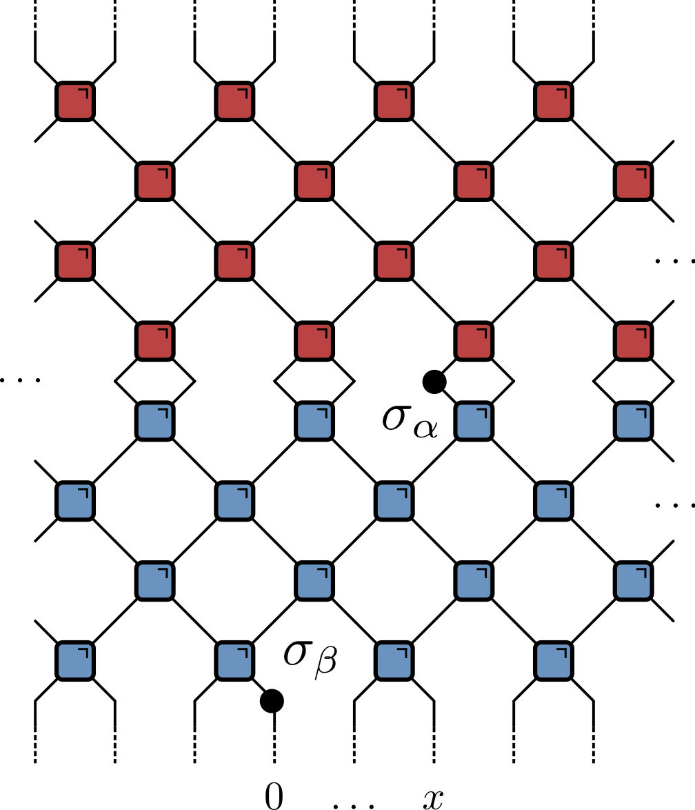
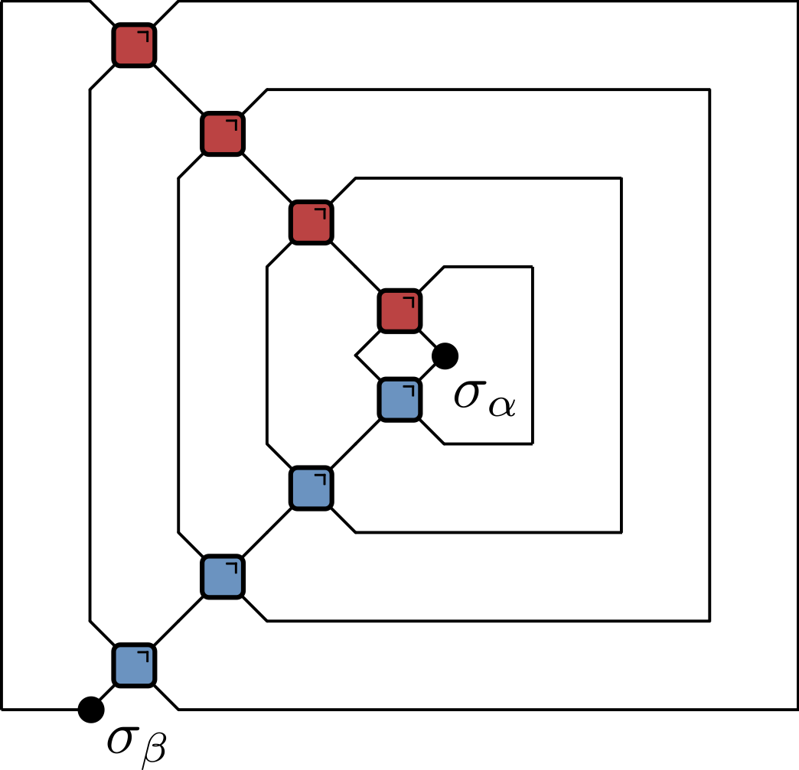
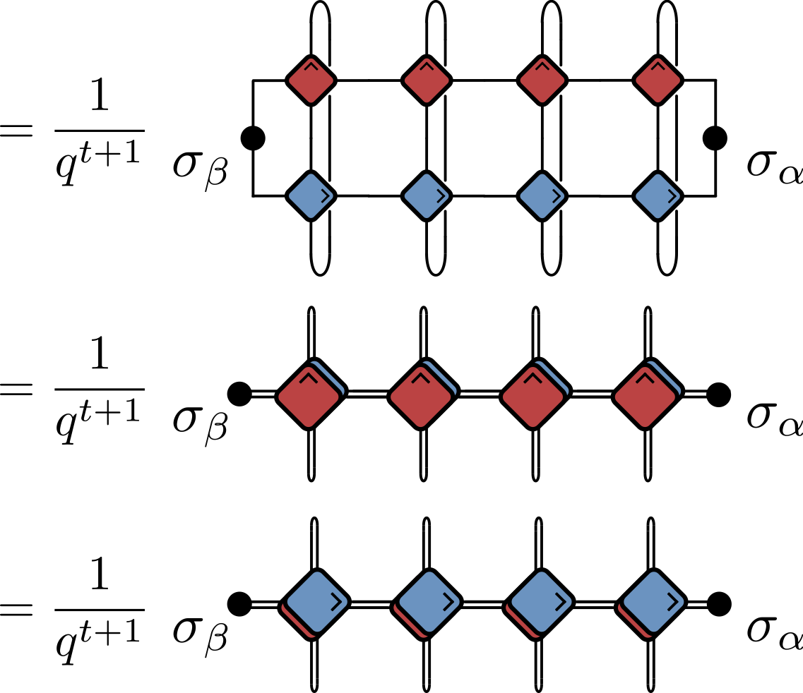
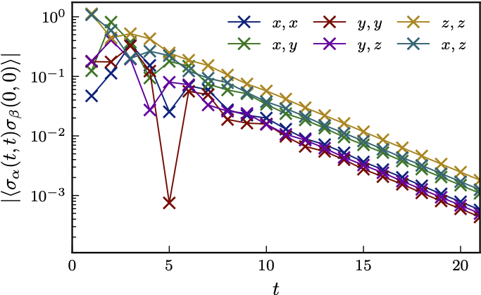
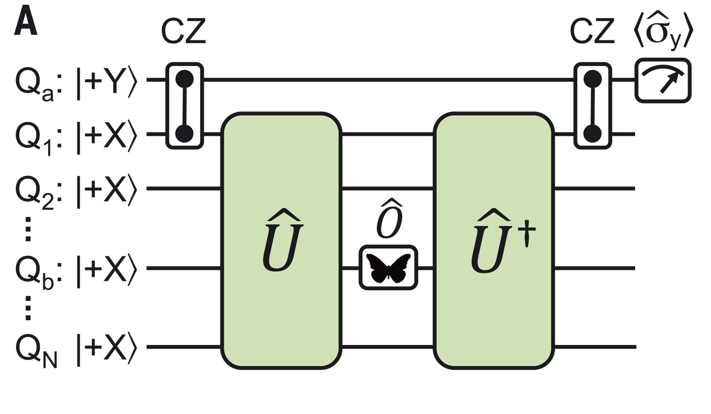
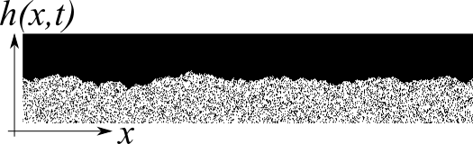

Quantum Circuits II

This lecture
Correlations near the light cone (see Claeys and Lamacraft for details)
Operator scrambling and the OTOC
(Infinite temperature) Correlations
\[ c_{\alpha \beta}(x,t) = \langle \sigma_{\alpha}(x,t) \sigma_{\beta}(0,0) \rangle,\qquad \sigma_\alpha(x,t)=U^\dagger(t)\sigma_\alpha(x)U(t) \]
- Vanishes when \(|x|>t\) (outside light cone)

On the light cone
- Using unitarity (only)


Quantum channel
$$ \begin{align}\label{eq:CorrChannels} \langle \sigma_{\alpha}(t,t) \sigma_{\beta}(0,0) \rangle &= \tr \left[\sigma_{\beta}\mathcal{M}_{-}^t(\sigma_{\alpha})\right] / q \\ &= \tr \left[ \sigma_{\alpha}\mathcal{M}_{+}^{t}(\sigma_{\beta})\right] / q \end{align} $$ - Calculating correlator involves repeated application of


Typical behaviour of correlations

- Surprising that correlations can be found at arbitrary distances!
Correlations for dual unitaries
Bertini, Kos, and Prosen introduced above formalism for dual unitaries
Recall light cone \(|x|\leq t\) was implied by unitarity
Dual unitarity implies correlations also vanish for \(|x|\geq t\)
Only nonzero correlations are on the light cone
Effect of conservation laws
- \(SU(2)\) preserving gate
$$ U_{j,j+1} = \cos\theta \mathbb{1}_{j,j+1} + i\sin\theta \operatorname{P}_{j.j+1} $$
\begin{multline} \mathcal{O} \longrightarrow U^\dagger_{j,j+1}\mathcal{O}U_{j,j+1} = \cos^2\theta \mathcal{O} + \sin^2\theta \operatorname{P}_{j.j+1}\mathcal{O} \operatorname{P}_{j.j+1} \\ -i\sin\theta\cos\theta \left[\operatorname{P}_{j.j+1}, \mathcal{O}\right] \end{multline}
Generally useful idea: consider random circuit and average
Take distribution \(\theta=\pm \theta_0\) with \(p(\theta_0)-p(-\theta_0)\equiv \delta > 0\)
Average dynamics
\[\begin{multline} \overline{U^\dagger_{j,j+1}\mathcal{O}U_{j,j+1}} = \cos^2\theta_0 \\, \mathcal{O} + \sin^2\theta_0 \\, P_{j.j+1}\mathcal{O} P_{j.j+1} \\\\ +i\delta \sin\theta_0\cos\theta_0 \left[P_{j.j+1}, \mathcal{O}\right] \end{multline}\]
- Interpretation:
- Operators on sites \(j\) and \(j+1\) switch with probability \(\sin^2\theta_0\)
- Asymmetry \(\delta\) governs strength of “quantum” dynamics
Continuous time limit
\[ \frac{d\bar{\mathcal{O}}}{dt} = \sum_j \left[iJ \left[P_{j,j+1},\bar{\mathcal{O}}\right]+\left(P_{j,j+1}\bar{\mathcal{O}}P_{j,j+1}-\bar{\mathcal{O}}\right)\right]. \]
\[\begin{align} i[P,\sigma^a\otimes 1]&=-\epsilon^{abc}\sigma^b\otimes\sigma^c\nonumber\\\\ i[P,1\otimes \sigma^a]&=\epsilon^{abc}\sigma^b\otimes\sigma^c\nonumber\\\\ i[P,\sigma^a\otimes \sigma^b]&=\epsilon^{abc}\left(\sigma^c\otimes 1- 1\otimes \sigma^c\right). \label{eq:split-merge} \end{align}\]
Sum of first two expressions vanishes by spin conservation
Describe operator “splitting” (\(1\to 2\)) and “merging” (\(2\to 1\)).
Expansion in Pauli basis
$$ Z_j(t)= \sum_{\mu_{1:N}=\{0,1,2,3\}^N} \mathcal{C}_{\mu_{1:N}}(t) \sigma_1^{\mu_1}\otimes\cdots \sigma_N^{\mu_N},\qquad \sigma^\mu = (\mathbb{1},X,Y,Z) $$
- With initial condition
\[ \begin{equation} \mathcal{C}\_{\mu_{1:N}}(0)=\begin{cases} 1 & \mu_j=z, \mu_k=0,\forall k\neq j \\\\ 0 & \text{otherwise}, \end{cases} \end{equation} \]
- Spin correlations \(\langle Z_j(t)Z_k(0)\rangle=C_{jk}(t) = \mathcal{C}_{0\cdots \mu_k=z \cdots 0}(t)\)

\(J=0\): 1 operator sector
- Writing \(\mathcal{C}^a_{0\cdots \mu_k=a\cdots 0}\equiv C^a_k\) we have equation of motion
\[ \partial_t C^a_k = C^a_{k+1} + C^a_{k-1} - 2 C^a_k\equiv \Delta_k C^a_k \]
- Diffusion of single \(\sigma^a\) (\(\Delta_k\) is 1D discrete Laplacian)

Equation of motion
\[ \begin{align} \partial_t \mathcal{C}\_{\mu_{1:N}} = \sum_j \left[J\epsilon_{\alpha\beta \mu_j \mu_{j+1}} \mathcal{C}\_{\mu_1\cdots \alpha\beta \cdots \mu_N} + \mathcal{C}\_{\mu_1\cdots \mu_{j+1}\mu_j \cdots \mu_N} - \mathcal{C}\_{\mu_1\cdots \mu_{j}\mu_{j+1} \cdots \mu_N}\right]. \end{align} \]

- See Claeys, Lamacraft, and Herzog-Arbeitman for more
Operator spreading
Correlations (typically) decay exponentially
Doesn’t mean that operator dynamics is trivial!
What can we say about \(\sigma_\alpha(x,t)=U^\dagger(t)\sigma_\alpha(x) U(t)\) generally?
$$ Z_j(t)= \sum_{\mu_{1:N}=\{0,1,2,3\}^N} \mathcal{C}_{\mu_{1:N}}(t) \sigma_1^{\mu_1}\otimes\cdots \sigma_N^{\mu_N},\qquad \sigma^\mu = (\mathbb{1},X,Y,Z) $$
As time progresses two things (tend to) increase
- Number of non-identity sites (operator spreading)
- Number of different contributions (operator entanglement)
How to quantify these?
- Operator spreading defines “butterfly velocity”
- Clifford gates lead to operator spreading but no entanglement
Out of time order correlator
\[ \operatorname{OTOC}_{jk}(t) =\langle Z_j(t)Z_k(0)Z_j(t)Z_k(0)\rangle \]
$$ Z_j(t)= \sum_{\mu_{1:N}=\{0,1,2,3\}^N} \mathcal{C}_{\mu_{1:N}}(t) \sigma_1^{\mu_1}\otimes\cdots \sigma_N^{\mu_N} $$
$$ \operatorname{OTOC}_{jk}(t)\propto \sum_{\mu_{1:N}}\mathcal{C}_{\mu_{1:N}}^2(t)\left[\delta_{\mu_k,0}+\delta_{\mu_k,3}-\delta_{\mu_k,1}-\delta_{\mu_k,2}\right] $$
\(\operatorname{OTOC}_{jk}(t)\neq 1\) when operator \(Z_j(t)\) spreads from site \(j\) to site \(k\)
Involves
$\mathcal{C}_{\mu_{1:N}}^2(t)$so survives averaging
Google’s OTOC experiment


\(i\operatorname{SWAP}\): sharp OTOC front
\(\sqrt{i\operatorname{SWAP}}\): broadened OTOC front
\(\overline{\operatorname{OTOC}}\): stochastic model
See Google’s OTOC experiment (supplementary material)
Continuous time version in Rowlands and Lamacraft
Main idea: OTOC extracted from
\[ \hat{\mathcal{O}}^{(2)}(t)=\overline{\hat{O}(t) \otimes \hat{O}(t)} \equiv \overline{\hat{O}(t)^{\otimes 2}} \]
\[ \hat{\mathcal{O}}^{(2)}(t)=\overline{\hat{O}(t) \otimes \hat{O}(t)} \equiv \overline{\hat{O}(t)^{\otimes 2}} \]
Invariant subspace that survives averaging built from \(\mathsf{O} \equiv\mathbb{1}\otimes\mathbb{1}\) and \(\mathsf{1}\equiv\frac{1}{3}\left[X\otimes X + Y\otimes Y+ Z\otimes Z\right]\) on each site
Basis: \(\mathsf{S}_{1:N}\equiv\mathsf{S}_1\otimes \mathsf{S}_2\otimes\cdots \mathsf{S}_N\), with \(\mathsf{S}_j=0,1\)
$$ \hat{\mathcal{O}}^{(2)}(t) = \sum_{\mathsf{S}_{1:N}\in\{\mathsf{0},\mathsf{1}\}^N} P_{\mathsf{S}_{1:N}}\mathsf{S}_{1:N} $$
$$ \hat{\mathcal{O}}^{(2)}(t) = \sum_{\mathsf{S}_{1:N}\in\{\mathsf{0},\mathsf{1}\}^N} P_{\mathsf{S}_{1:N}}\mathsf{S}_{1:N} $$
- (Average of) gate provides update rule for \(P_{\mathsf{S}_{1:N}}\)
$$ P_{\mathsf{S}_{1:N}}(t+1) = \sum_{\mathsf{S}'_j, \mathsf{S}'_k} P_{\mathsf{S}_1\cdots \mathsf{S}_j \mathsf{S}'_{j+1}\cdots \mathsf{S}'_N}(t)\Omega_{\mathsf{S}'_j \mathsf{S}'_k,\mathsf{S}_j \mathsf{S}_k} $$$$ \begin{gathered} \Omega=\left(\begin{array}{cccc} 1 & 0 & 0 & 0 \\ 0 & 1-a-b & a & b \\ 0 & a & 1-a-b & b \\ 0 & \frac{b}{3} & \frac{b}{3} & \left(1-\frac{2}{3} b\right) \end{array}\right) \\ a=\frac{1}{3}\left(2 \sin ^{2} \theta+\sin ^{4} \theta\right) \qquad b=\frac{1}{3}\left(\frac{1}{2} \sin ^{2} 2 \theta+2\left(\sin ^{2} \theta+\cos ^{2} \theta\right)\right) \end{gathered} $$ - \(\theta=\pi/2\) for \(i\operatorname{SWAP}\), \(\theta=\pi/4\) for \(\sqrt{i\operatorname{SWAP}}\)
Markov process
$$ \begin{gathered} \Omega=\left(\begin{array}{cccc} 1 & 0 & 0 & 0 \\ 0 & 1-a-b & a & b \\ 0 & a & 1-a-b & b \\ 0 & \frac{b}{3} & \frac{b}{3} & \left(1-\frac{2}{3} b\right) \end{array}\right) \\ \end{gathered} $$
Rows sum to one: Stochastic matrix
Possible transitions
\[\require{extpfeil} \Newextarrow{\xleftrightharpoon}{5,10}{0x21CB} \mathsf{10} \xleftrightharpoon[a]{a} \mathsf{01} \qquad \mathsf{11} \xleftrightharpoon[b/3]{b} \mathsf{10},\mathsf{01} \] - \(\mathsf{00}\) is “inert”
Fredrickson–Andersen model
- Stationary state: independent sites with \(p_1=3/4\), \(p_0=1/4\)
Butterfly velocity
- Front propagation characterised by finite velocity \(v_\text{B}\)

Front broadening
- Front broadens unless \(v_\text{B}\) maximal as for \(i\operatorname{SWAP}\)


Diffusive in 1D \(\propto \sqrt{t}\)
KPZ dynamics in 2D

- See Nahum, Vijay, and Haah for much more
Classical simulation?
Efficient simulation of averaged OTOC dynamics via Monte Carlo
Appearance of Markov process a little surprising
OTOC fluctuations
- Circuit-to-circuit fluctuations of OTOC from
\[ \hat{\mathcal{O}}^{(4)}(t)=\overline{\hat{O}(t) \otimes \hat{O}(t) \otimes \hat{O}(t) \otimes \hat{O}(t)} \equiv \overline{\hat{O}(t)^{\otimes 4}} \]
Go through same procedure of identifying invariant states
Evolution of average now involves negative matrix elements
Leads to sign problem in Monte Carlo simulation
Same problem for \(\overline{\operatorname{OTOC}}\) in models with number conservation (Rowlands and Lamacraft)